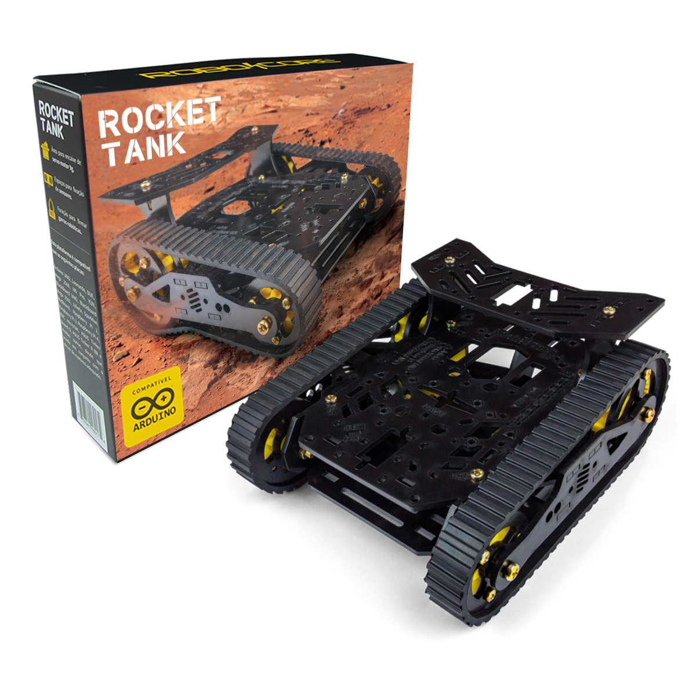

Digital Twin of a Tracked Robot (ROS 2)
- Problem
- Low-cost robots have poor odometry, which makes it hard to trust a digital twin of them.
- What I did
- Built a digital twin for a low-cost tracked robot, with off-MCU odometry validated by an overhead ArUco camera.